A · AKAUN
Autentikasi & Akaun
Log masuk JDN SSO, pendaftaran, profil pengguna
B · PEMANTAUAN
Dashboard & Pendaftaran Projek
SKALA-driven dashboard, senarai 247 projek aktif
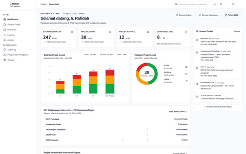
Dashboard Utama
KPI, statistik PSG, top intervensi diperlukan
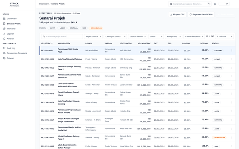
Senarai Projek
247 projek — auto flag PSG (≥10% atau ≥30 hari)
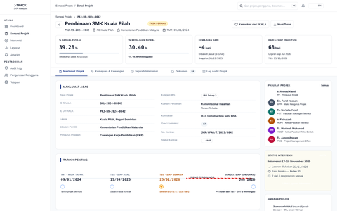
Detail Projek
Maklumat projek + kemajuan vs jadual
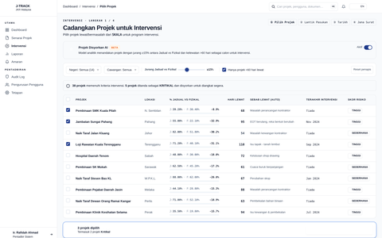
Pilih Projek
Cadangan projek untuk intervensi
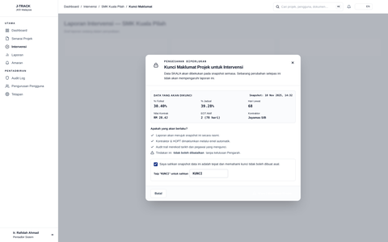
Modal Kunci Maklumat
Tambah maklumat penting projek
FASA 1
Perancangan Intervensi
Bab 3 Garis Panduan · Lantik pasukan → Tarikh → Surat Lantikan → Briefing
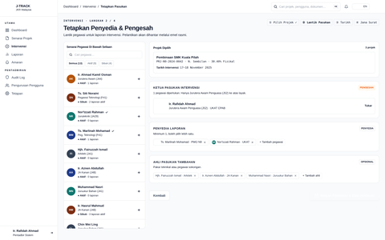
1 · Tetapkan Pasukan
Lantik Ketua J54/J52/J48 + Penyedia + Ahli (disiplin)
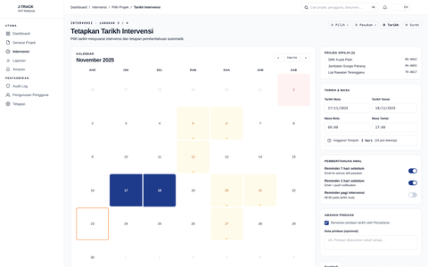
2 · Tarikh Intervensi
Penjadualan lawatan tapak & sesi briefing
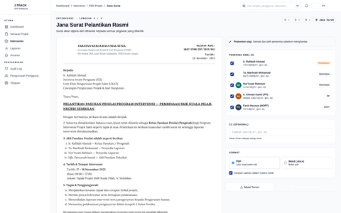
3 · Jana Surat Lantikan
Editor templat Appendix A · auto-emel ke pasukan
FASA 1
Appendix A
4 · Surat Lantikan BARU
Pratonton PDF rasmi · placeholder fields · PDF/DOCX
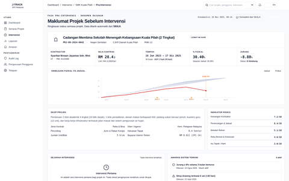
5 · Pra-Intervensi (Briefing)
Kajian awal · SKALA pull · S-Curve · Indikator Risiko
FASA 2
Pelaksanaan Intervensi
Bab 4 Garis Panduan · Lawatan tapak, Borang Penilaian, pengesyoran
FASA 3
Pelaporan Intervensi
Bab 5 Garis Panduan · Susun → Semak → Muktamadkan → Edar (Appendix D + E)
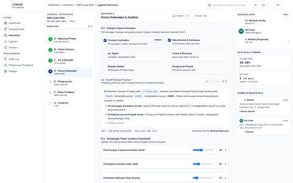
1 · Susun Laporan (Borang)
Input Punca Kelewatan & Analisis · Appendix D
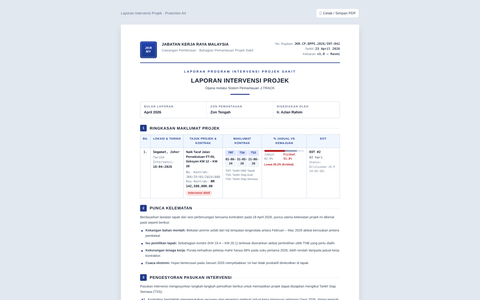
2 · Pratonton Laporan
Paparan format rasmi (Appendix D PDF view)
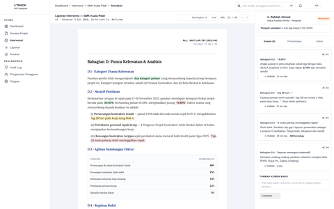
3 · Semakan Pengesah
Review & komen Pegawai Penguasa (Sahkan/Pulangkan/Tolak)
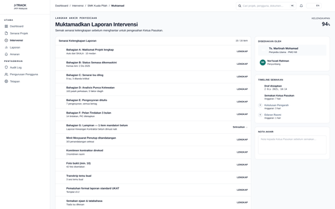
4 · Muktamadkan Laporan
Senarai kelengkapan 16 item · proses kelulusan akhir
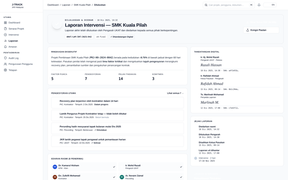
5 · Laporan Diluluskan
3 tandatangan digital · siap untuk diedarkan
FASA 3
Appendix E
6 · Surat Edaran BARU
Pratonton Appendix E · Sahkan & Edar ke 6 pihak + CPAB
FASA 4
Pasca Intervensi
Bab 6 Garis Panduan · Catatan tapak → 3 bulan susulan → Penilaian → Tutup PSG
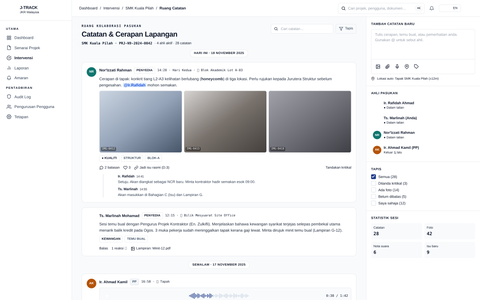
1 · Ruang Catatan Tapak
Log harian pasukan · muat naik gambar · @-mention
FASA 4
Bab 6
2 · Susulan Bulanan BARU
M+1, M+2, M+3 progress · cadangan tindakan
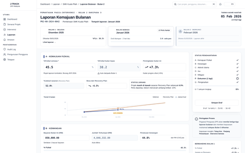
3 · Laporan Kemajuan
Output pelaporan automatik bulanan ke pengarah
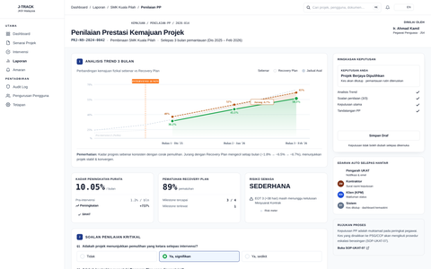
4 · Penilaian Prestasi
Trend 3 bulan + skor metrik pemulihan
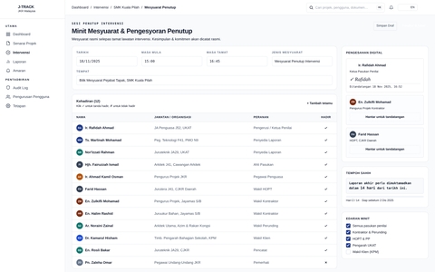
5 · Mesyuarat Penutup PSG
Agenda · tandatangan kontraktor · pengesyoran penutupan
SOKONGAN
Rujukan, Compliance & Pentadbiran
Carta alir, notifikasi, audit DKICT, pengurusan pengguna RBAC
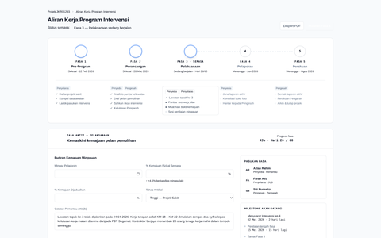
Carta Alir 4-Fasa
Visualizer end-to-end intervensi (rujukan)
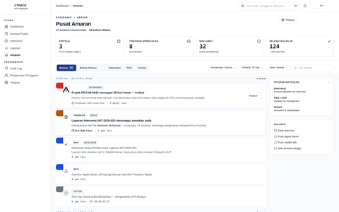
Pusat Amaran
In-app notification centre
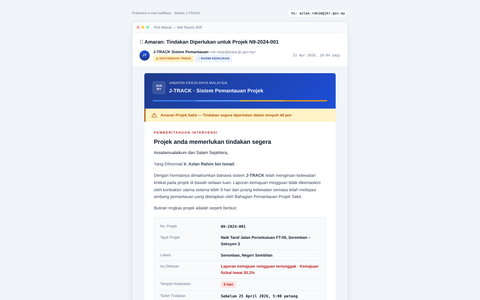
Templat Email
Sample notifikasi yang dihantar
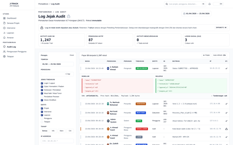
Log Jejak Audit
SHA-256 hash-chain · DKICT compliant · 7-tahun retention
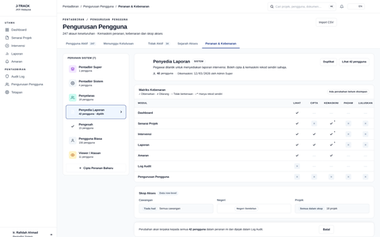
Pengurusan Pengguna
RBAC 5-tier · kebenaran akses